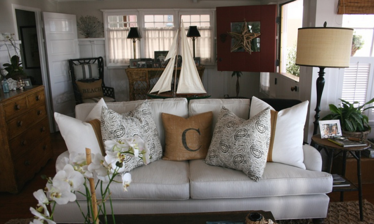

.png)
.PNG)
.PNG)
.PNG)
.PNG)
.PNG)
.JPG)
.JPG)
.PNG)
.PNG)


I know you have probably seen the cute little kitchen above from a feature several years ago in Better Homes and Gardens magazine. Even if this room was not in a house near the water, I would still love it. It has such great cottage elements with its white paneled cabinets, wood floors, apron front sink, window shelf, and curtains in a perfectly simple stripe (and the rug has red!) And if you have seen that kitchen, then you have probably seen this living room, too:
But have you seen it like this?pinterest.com
This home is featured in the 2013 16th Annual Newport Harbor High School Home and Garden Tour. It is always interesting to me to see photographs of spaces taken at different points in time. Same room…same furniture…just accessorized differently. I know the photography, lighting, and photo editing make a major difference, but I think the change in accent color makes a big difference, too.
Take a look at the photo of the chair in the corner from the magazine photo shoot:
And now at the same space photographed more recently. I do love the lamp. pinterest.com
pinterest.com
Here is another view of that chair with its partner in front of the fireplace. I am afraid I don’t have a magazine photo shoot one with which to compare it.
And here is a closer shot of the window seat corner in that same room. bhg.com
bhg.com
And now a view of the same space taken recently for the Newport Harbor Home Tour. The seat cushion currently has a cute little print with some blue in it. It seems more beachy in its style now rather than the previous somewhat nautical look. (There is a difference in the two to me.)
I am sure you remember how the master bedroom under the eaves appeared in the Better Homes and Gardens’ feature. (So many of you have pinned this one on your Pinterest boards.)
From this Orange County Register newspaper photo, we can see the same linens seem to be there on that great metal bed, but the lumbar pillows with the red accents are gone. Also, the red striped rug has been replaced by a black striped one.
There is an armchair on the other side of that bedroom that has views of the water. I bet that would be everyone’s favorite spot to sit. Here it is as it looked for the photo shoot with its splashes of red…
and as it is now in another photo from the local newspaper for the Newport Harbor Home Tour. It sports a striped slipcover, and the pillows are gray and burlap.
I see the shiny finished antique black dresser from before is still there. bhg.com
bhg.com
There is another bedroom under the eaves upstairs that was not shown in the magazine feature. Here are a couple of photos of it for the home tour.
I love the simple framed black and white photographs, and I also love that they did include a little red with the trunk there.
One of my favorite spaces in the cottage is the dining area. bhg.com
bhg.com
I have not been able to find any recent photographs online of it. I wish I could take the tour just to see what changes they made there! Do you see the edge of that green cabinet with a chair beside it above? Here is a recent photo of that space.
If you don’t remember the exterior of this charming beach house, you can see it here with its flag, black awnings, and red beach cruising bicycle:
If I had a beach cottage, this would be it. It is perfect with its board and batten walls, beadboard, wood floors, classic upholstered pieces, black and white photography, and wicker in the mix. They have updated the look some to be current by going with more black and burlap accessories, but I still love all the red they had previously…that is just me…nothing wrong at all with what they did. If you have been around here any, you know that I am a lover of all things red. 🙂
And if I were over on the West Coast instead of here on the East Coast, I would be sure to have my ticket ready for this tour! It will be May 16, 2013 (in Newport Beach, California). The $65 admission cost includes a welcome reception at Greenleaf Gourmet Chopshop (which has the tastiest looking health food I have ever seen!)…
and tours of several beautiful homes in the area (including this perfect beach cottage), a luncheon at Newport Theater Arts Center catered by Stonefire Grill, a boutique with 18 vendors for your shopping pleasure …
and last, but certainly far from least, an afternoon reception at the wonderful interior design shop of Barclay Butera. (You can read a previous post I did on his work here.)
All proceeds from this absolutely fantastic tour go to a very worthy cause – the Newport Harbor High School. If any of you readers are in that area, I hope you have an opportunity to take part in this. Be my eyes for me! (Unfortunately, no cameras are allowed.) I will wrap up this post with a question for you…
Which room in this beach cottage is your favorite?
Looking forward to hearing from you!


.PNG)
{kind=link}
Kelly, You would love it here in Newport Beach! And the home tour is such a fun day. I was just on the East coast in Hilton Head. Where are you?
———————————————————————
Oh yes, I know I would love it there! If a town has “beach” in its name, how can I not love it?! 🙂 My sister goes to Hilton Head every year. Lucky you that you were just there! We are in Georgia…quite a far trip from here to Newport Beach.
Kelly
I LOVE your comparison of photos! I actually took all the new photos that were on pinterest and on our website, since I was on the committee this year for publicity and social media.
Sharing on our facebook page, found here:
https://www.facebook.com/NewportHarborHomeGardenTour
Thanks for posting!!
———————————————————————-
What a fun job you had! Thanks for sharing the post. I absolutely love that charming cottage! It has got to be one of my most favorite houses. And I wish I could fly across the country for the tour. It always sounds (and looks wonderful!)
Thanks again!
Kelly
I love the BHG photo shoot! Those pops of red really make the rooms have personality.
Kelly, I have to say that I LOVE the red from the BHG photo shoot. The new styling and photos don’t hold a candle to them, in my opinion.
Kelly
I liked the kitchen the best — I seem to be “into” kitchens these days after my remodel! I liked the “before” pictures because of the brighter accent colors. It was fun looking and comparing the two different settings. I liked seeing how the same pieces were reused and changed around plus discovering the new pieces.
Hi Kelly – Loved this post and the “compare and contrast” you did with the photos. Great work…I continue to enjoy all your work!
This is the type of cottage I would love to have! Hoping we see many of these on our trip this summer!
Hi Kelly,
I do remember this house from before, and I just love it. I have to say I prefer the red accents over the neutral. I can’t pick a favorite room because it’s just a sweet little cottage.
I have always had a love affair with red….it makes me happy. So of course I think the before pictures are so much better.I will never get on the all neutral bandwagon. I had to laugh when I saw the comments about loving the bed under the eaves….my first thought was that I would hit my head if I sat up in bed.
I LOVE seeing the differences from picture to picture. The pics of the kitchen are some of my favs. I can’t believe my neutral palette loving self is about to say this (maybe your rubbing off on me) but I LOVE the red!!!! Happy Weekend to you!
Does the front terrace count as a room? I would pick that space first….then the kitchen. so hard to choose just one space! 🙂
I LOVE the “before” version soooo much better….the touches of red just make the room…
Kelly,
I live within easy driving distance of this house, and always enjoy home tours! I’d love to go to this one. I vote for the red accents, too.
~Ann
Very fascinating to see the rooms in different photos at different points in time. Also fascinating to see the difference camera & lighting make on the image!
Kelly,
I love that beach house also. My favorite room is by far the kitchen. That is where everyone always gathers. I love to visit in the kitchen. Thanks for sharing it with us!
Hi Kelly, I love this beach house too. The pops of red are what I prefer but both are beautiful. The kitchen might be my favorite room but it’s hard to pick just one. The master bedroom looks so inviting.
Well Kelly, I would have to say I like the kitchen and living room but I think I like the original decor better than the neutrals. I know neutrals are big these days but I like to surround myself with happy colors.
I like the changes, but really loved the red in the befores.
I ended up pinning half of the photos you have in this post…L.O.V.E. I am also coveting those stenciled burlap pillows and that large vintage glass jar! I might have to getting busying with some DIY-ing. I usually wait until June to put out my ‘seaside/beachy’ stuff–but you’ve inspired me with this post and I’m ready to decorate for summer NOW. 🙂
Great post as always! Take care and enjoy your countdown until summer vacation.
Blessings,
Amy
Kelly,
I love this house, both versions. I live about 6 miles from this area and may have to see about attending this home tour. The greenhouse chophouse is a yummy place to eat. I stopped going to these home tours because too many of the homes started seeming overly decorated without heart, if you know what I mean. This home looks like a real house with charm and personality. Thank you for finding this for me. 😀
Karen
I have been getting bhg for years and am wondering how in the world I missed this!! I am a color girl and definitely love the older pictures better but all of the are fantastic. Sleeping in the bed under the eaves would be like I was in a cocoon. Cozy. Isn’t it everyones dream to live at the beach?!
Oh, I love seeing a room in different incarnations. I agree that I prefer the first version with the hits of red. I’ve done a couple of posts comparing two versions of a room that you might enjoy – like this one of Sarah Richardson’s rooms (http://gracie-senseandsimplicity.blogspot.ca/2012/04/wish-wednesday-27.html) and part way down this post about kitchens you can see two versions of the same adorable white kitchen (http://gracie-senseandsimplicity.blogspot.ca/2013/01/17-ways-to-add-colour-to-white-kitchen.html).
Girl, when and where do you find all of these pictures. I have the pages of the beach cottage with the red accents and prefer it that way. Wouldn’t you just love to live there?
I will take two of each 🙂 Angela @ HickoryTrail